De verandering waargenomen
A.E. Cohen als historicus en universitair bestuurder
Tentoonstelling in de Universiteitsbibliotheek te Leiden, van 28 november 2003 tot en met 4 januari 2004.
Tentoongestelde
stukken
1.
Jeugdjaren in Rotterdam
|
`Zeg Dop, vertel nou eens: wat wil jij eigenlijk worden?' |
|
`Geleerde' |
Adolf Emile Cohen werd geboren te Rotterdam op 4 december 1913 als eerste zoon van de apotheker Hendrik Cohen (Rotterdam, 20 december 1879 - Bergen-Belsen, 11 januari 1945) en Flora Polak (Rotterdam, 7 juli 1885 - Bergen-Belsen, 4 maart 1945). De grootvader van vaderszijde was Eliazar Cohen, koopman in lompen, gehuwd met Rosetta Rijs. Dolf Cohen werd vernoemd naar zijn grootvader van moederszijde, Adolf Polak (Rotterdam, 1845 - Rotterdam, 1905), gehuwd met Elisabeth Engers (Rotterdam, 1854 - Westerbork, 1943). Twee-en-half jaar later kreeg Dolf een jongere broer, Ernst Max Cohen (Rotterdam, 26 mei 1916). Een groot voorbeeld voor het gezin was de broer van moeder, Nico J. Polak (1887-1948), een van de eerste studenten van de Rotterdamse Handelshogeschool. Aan deze instelling werd hij weldra hoogleraar en rector magnificus. Dolf bezocht het Erasmiaansch Gymnasium en daarna schreef hij zich in als student geschiedenis te Leiden. In hetzelfde jaar was zijn vader toegelaten als privaat-docent in de geschiedenis van de pharmie. Als zodanig leverde hij een bijdrage aan een reeks voordrachten over de cultuurgeschiedenis. Dolf woonde als eerstejaars student ook de voordracht van zijn vader bij.
| 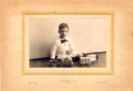 | 1.1. De kleine Dolf, met speelgoedtrein. [AEC] | |
| 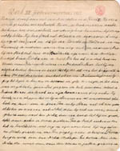 | 1.2. Schoolopstel "Dirk III", met verbeteringen door zijn vader. [AEC] | |
| 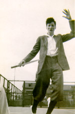 | 1.3. Als gymnasiast, met tennisracket [AEC] | |
| 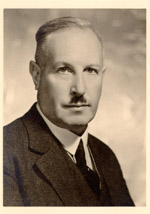 | 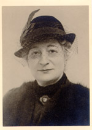 | 1.4. Hendrik en Flora Cohen-Polak [AEC]
Hendrik Cohen was apotheker te Rotterdam en privaat-docent in de geschiedenis van de pharmacie aan de Universiteit te Leiden |
| 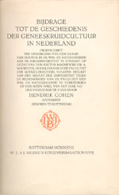 | 1.5. Bijdrage tot de
geschiedenis der geneeskruidcultuur in Nederland / door Hendrik
Cohen. - Rotterdam : Brusse, 1927. - xxiii, 251 p. : ill.. ; 25 cm
Proefschrift Utrecht. - Met lit.opg. en index. [ ¶ Hendrik Cohen promoveerde op latere leeftijd. Hij ging persoonlijk de rector van het gymnasium een exemplaar aanbieden; deze stelde Dolf vrij van bijwoning van het onderwijs op de promotiedag. |
|
| 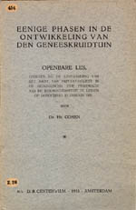 | 1.6. Eenige phasen in de ontwikkeling van den geneeskruidtuin : openbare les, gegeven bij de aanvaarding van het ambt van privaat-docent in de geschiedenis der pharmacie te Leiden op Donderdag 19 Januari 1933 / Hendrik Cohen. - Amsterdam, 1933. - 20 p. ; in-8º [UBL 454 E 26] | |
| 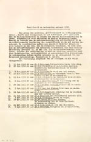 | 1.7. Wereldbeeld en
wetenschap omtrent 1700 UBL, Huizinga-archief 38 I.2.]
¶ Overzicht cultuurhistorische voordrachtenreeks voor het academisch jaar 1932/1933. Onder nr. 12 de aankondiging van een lezing van Hk. Cohen, De vernieuwing van de oude apotheek. |
|
| 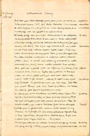 | 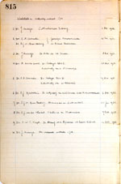 | 1.8. Aantekeningen van Dolf Cohen, gemaakt bij de voordrachtenreeks [Utrecht, Floris Cohen] |
| 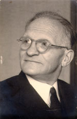 | 1.9. Oom Nico Jacob Polak
¶ Nico Polak (Rotterdam, 1887 - Rotterdam, 1948) was de broer van de moeder van Dolf Cohen. Hij gold als een voorbeeld in wetenschappelijk opzicht. Door zijn huwelijk met een niet-joodse vrouw kon hij tijdens de bezetting de familie Cohen herhaaldelijk behulpzaam zijn.[Familie Polak] |
|
| 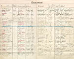 | 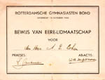 | |
| 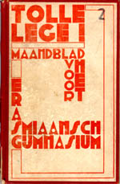 | 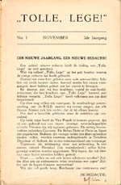 | |
| 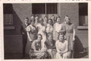 | 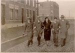 | |
| vorige pagina | volgende pagina |